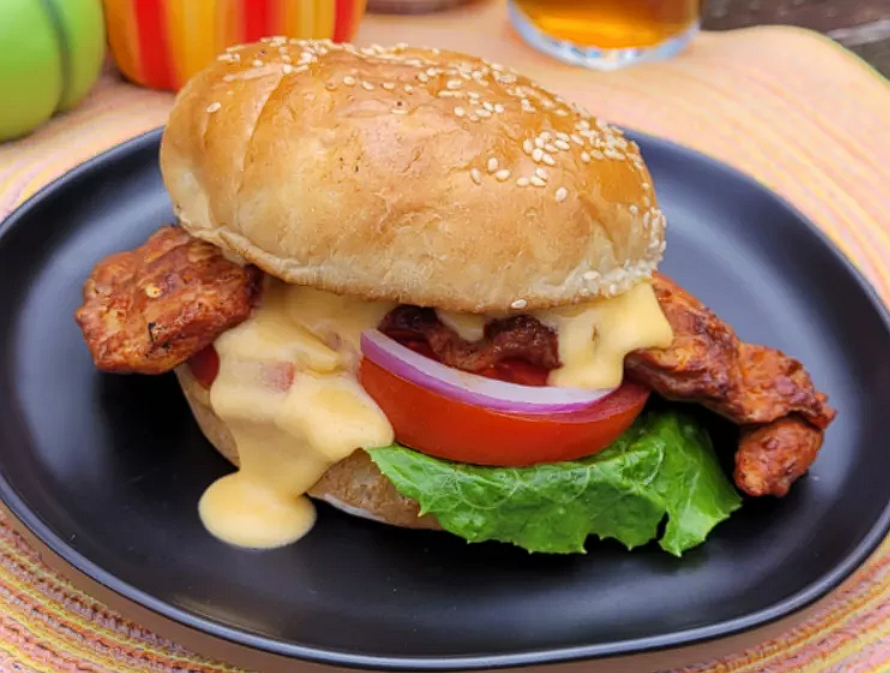

Odin Recipes
Odin has many names and is the god of both war and death.
Spicy Chicken Burger with Beer Cheese Sauce
Description
The chicken for this spicy chicken burger with beer cheese sauce is marinated in beer and spices for 4 hours, then grilled. There’s more beer in the quick stovetop cheese sauce that is poured over the top. Don't forget to grill the buns and add your favorite chicken burger toppings!
Ingredients
- 1/2 cup light beer
- 1 tablespoons smoked paprika
- 1 tablespoon chili powder
- 2 teaspoons red pepper flakes
- 2 garlic cloves, minced
- 2 pounds boneless skinless chicken breast halves
- 4 hamburger buns
Beer Cheese Sauce
- 2 tablespoons butter
- 2 tablespoons all-purpose flour
- 1 cup half and half
- 1/2 cup light beer
- 2 cups grated sharp Cheddar cheese
- 1/4 teaspoon smoked paprika
- 1/4 teaspoon garlic powder
- 1/2 teaspoon ground mustard
Directions
Step 1: Pour beer, paprika, chili powder, red pepper flakes, and garlic cloves into a resealable plastic bag. Add chicken, coat with the marinade, squeeze out excess air, and seal the bag. Marinate in the refrigerator, at least 4 hours.
Step 2: Preheat an outdoor grill for medium-high heat and lightly oil the grate.
Step 3: Cook chicken on the prepared grill until no longer pink and juices run clear, 10 to 15 minutes per side. An instant-read thermometer inserted into the center should read at least 165 degrees F (74 degrees C).
Step 4: Meanwhile, make cheese sauce. Melt butter in a saucepan over medium heat. Whisk in flour; whisk continuously until mixture turns golden and forms a smooth paste. Pour in half and half and beer; stir until mixture thickens, 3 to 5 minutes. Stir in cheese until melted, 2 to 3 minutes more. Stir in paprika, garlic powder, and ground mustard.
Step 5: Toast hamburger buns on the grill until they show grill marks, about 2 minutes. Add your favorite toppings, pour cheese sauce on top, and serve immediately.
Back to the main page
Original Recipe